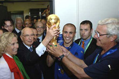

ФУТБОЛ
Футбо́л (англ. football от foot «ступня» + ball «мяч») — командный вид спорта, в котором целью является забить мяч в ворота соперника ногами или другими частями тела (кроме рук) большее количество раз, чем команда соперника. В настоящее время самый популярный и массовый вид спорта в мире. Есть 17 официальных правил игры, каждое из которых содержит список оговорок и руководящих принципов. Эти правила предназначены для применения на всех уровнях футбола, хотя есть некоторые изменения для таких групп, как юниоры, взрослые, женщины и люди с ограниченными физическими возможностями. Законы очень часто формулировались в общих чертах, которые позволяют упростить их применения в зависимости от характера игры. Правила игры публикуются в ФИФА, но поддерживаются Международным советом футбольных ассоциаций (IFAB). Каждая команда состоит максимум из одиннадцати игроков (без учёта запасных), один из которых должен быть вратарём. Правила неофициальных соревнований могут уменьшить количество игроков, максимум до 7. Вратари являются единственными игроками, которым позволено играть руками при условии: они делают это в пределах штрафной площади у своих собственных ворот. Хотя есть различные позиции на поле, эти позиции не обязательны. Отдельная футбольная игра называется матч, который в свою очередь состоит из двух таймов по 45 минут. Пауза между первым и вторым таймами составляет 15 минут, в течение которой команды отдыхают, а по её окончании меняются воротами. Цель игры — забить мяч в ворота противника, сделать это как можно большее количество раз и постараться не допустить гола в свои ворота. Матч выигрывает команда, забившая большее количество голов.